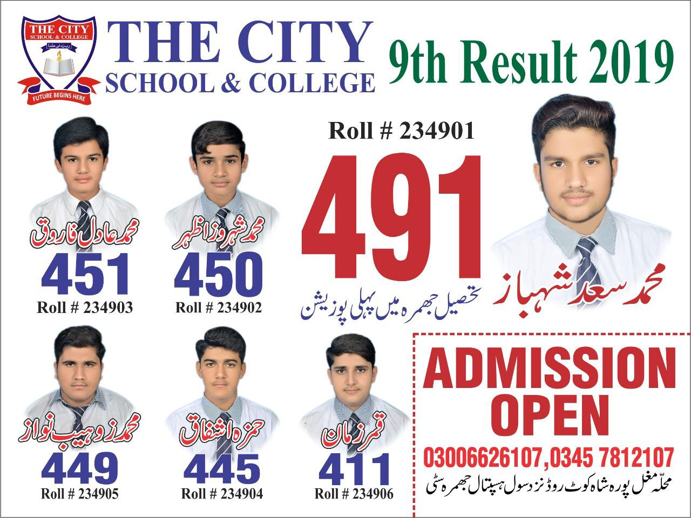
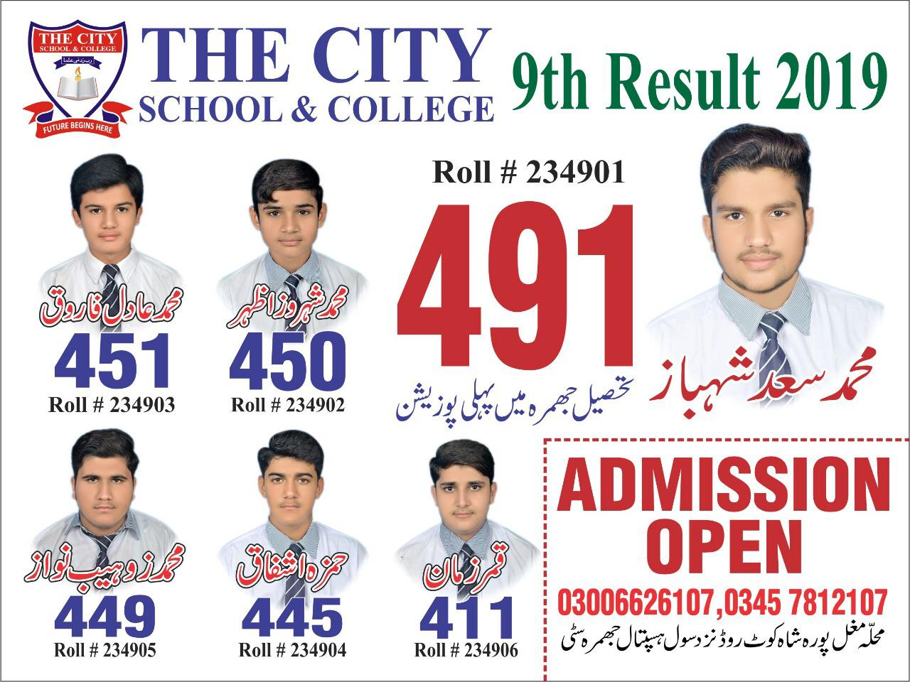
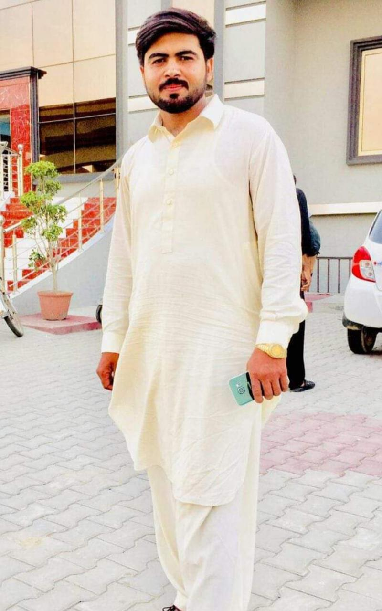
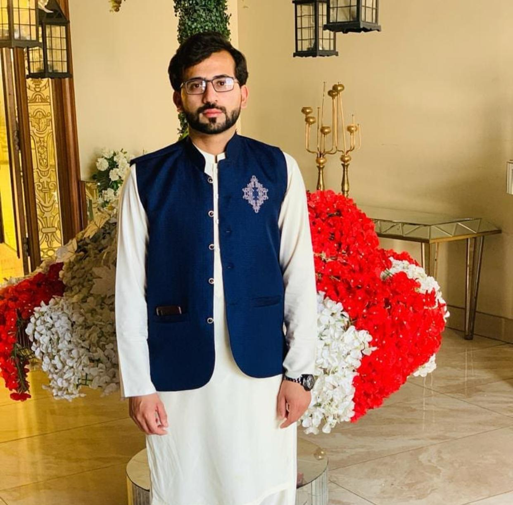
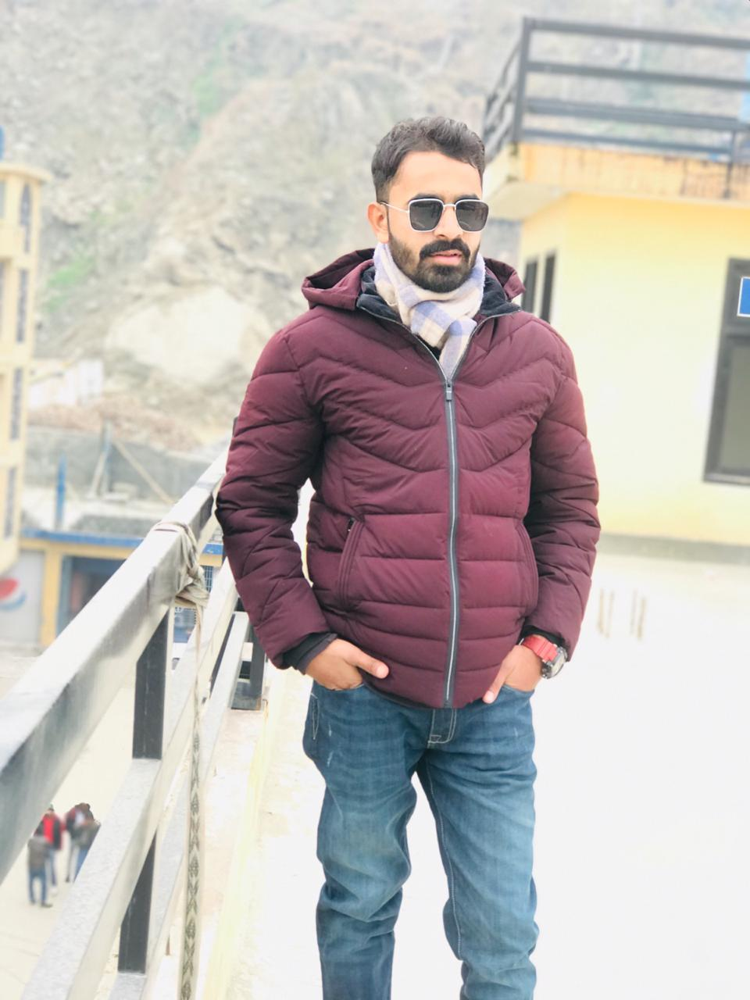
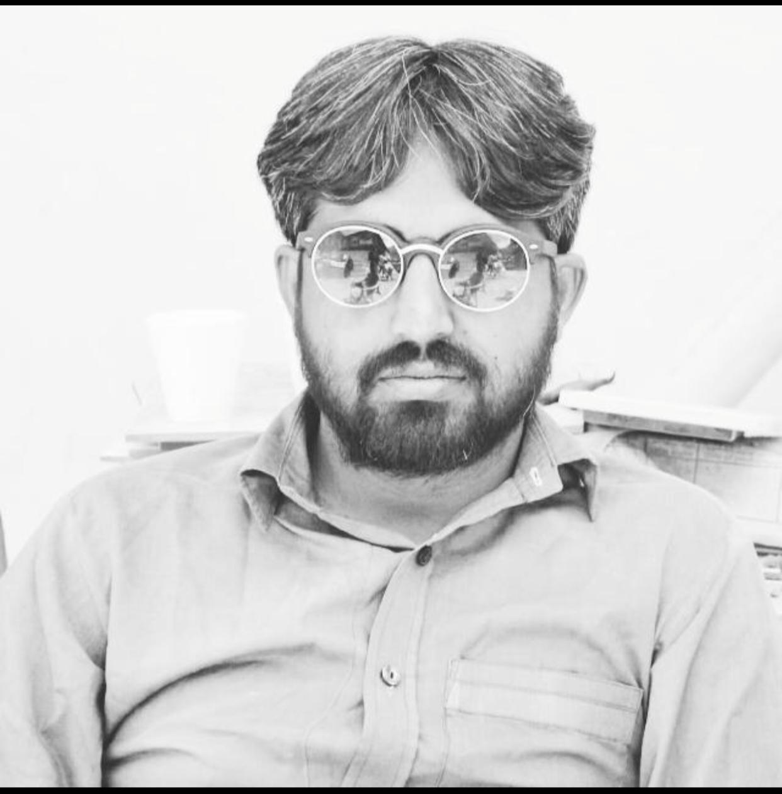
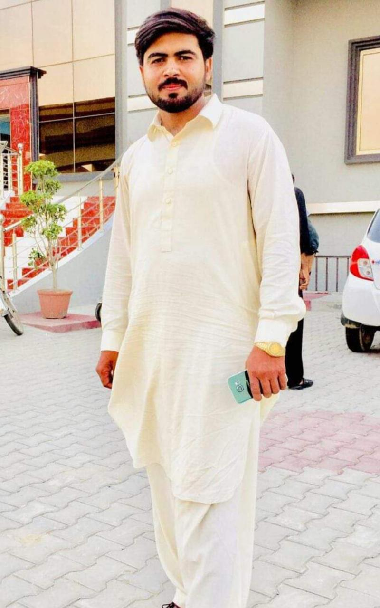
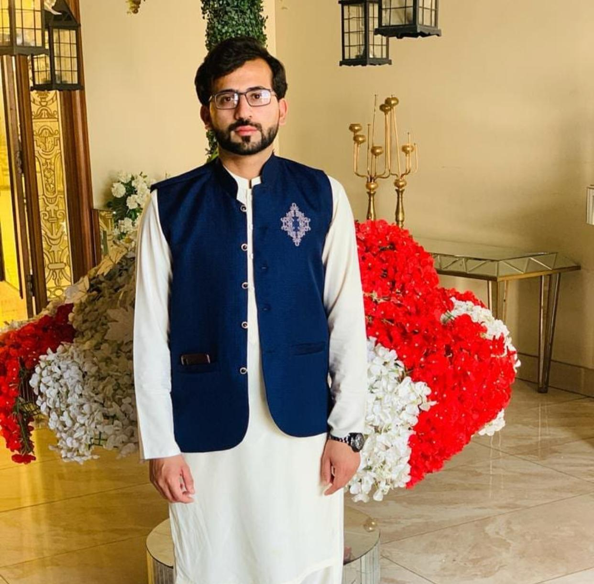
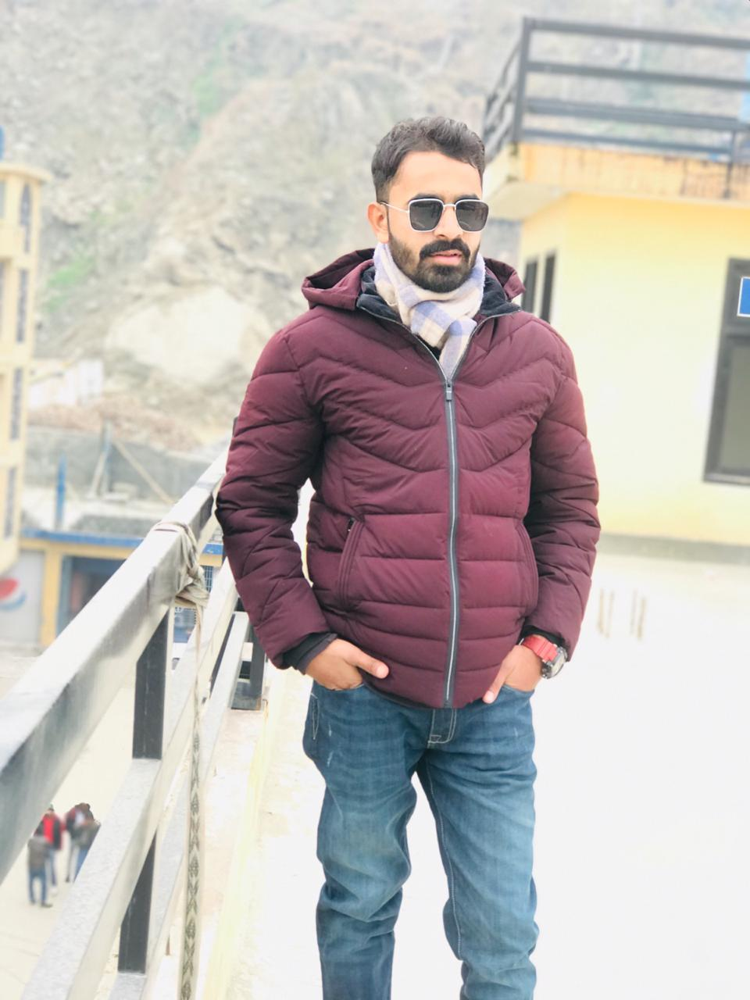
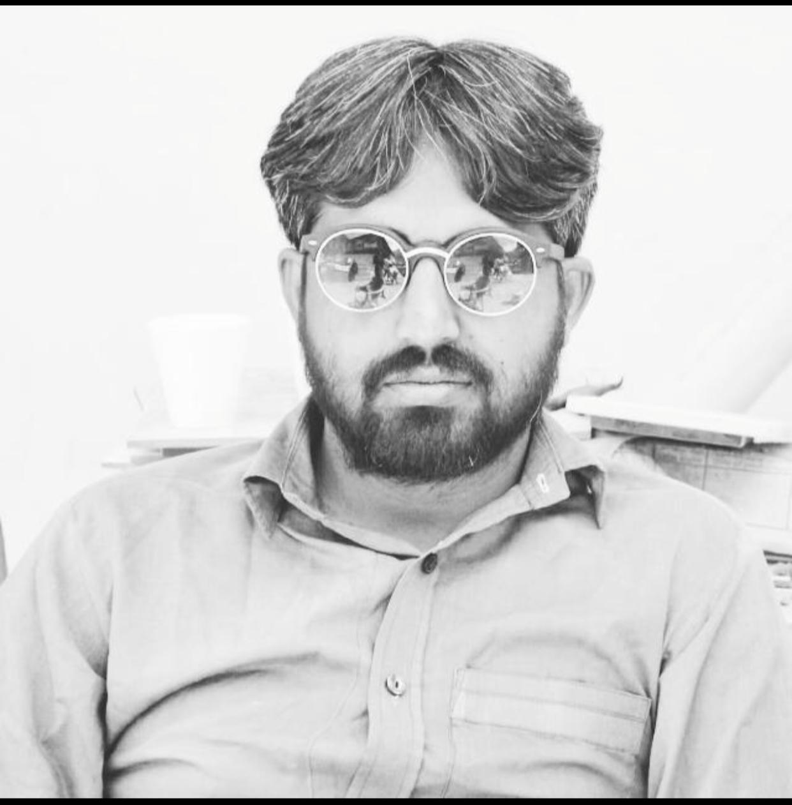

Covid 19
The protection of children and educational facilities is particularly
important.
Precautions are necessary to prevent the potential spread of COVID-19 in school settings.
However, care must also be taken to avoid stigmatizing students and staff
who may have been exposed to the virus. COVID-19 does not differentiate among borders,
ethnicities, disability status, age or gender.
Education settings should continue to be welcoming,
respectful, inclusive and supportive environments to all.
Measures taken by schools can prevent the entry and spread of COVID-19 by students and staff who may have
been exposed to the virus,
while minimizing disruption and protecting students and staff from discrimination.
DISADVANTAGES
Even if COVID-19 does not seem to affect children severely,
many pediatrics wards have been focused more on the emergency of COVID-19-related issues.
For this reason, attention on many other acute and chronic diseases, especially those rarer, may be lacking.
This scarcity of interest may cause, particularly in childhood, severe problems or even death.
Politicians and physicians may be distracted by COVID-19-related issues, but also parents or even the same young patients,
as these last’s attention may be focused only on news and information related to COVID-19,
misunderstanding some symptoms or paying less attention to their (chronic) diseases.
 

Admission open
9th ,10th
1st Year
2nd Year
For Girls And Boys
We'd love to get your opinion!
Where dreams take root…and grow. ... Learners becoming leaders.
.Think big. ... Shining with untarnished honor.
We are an Emotionally Intelligent Institute helping individuals
exploring themselves and influencing others for shared goals.
It helps students in becoming inspired learners, aspires, dreamers and
motivate them to become the master of their fate and captain of their
soul. We are not only producing best intellect in students through our
plan IQ but also making them emotionally intelligent with our plan which
in turn gives them the courage to make the world smile by adding value
in peoples’ lives.
 






